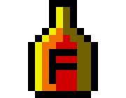
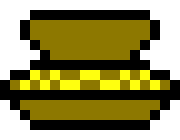
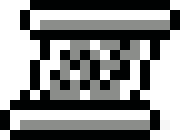
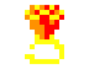
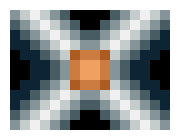

By executing "GatePC 1992", you will get a small menu. Everything you have to
do is to click on the "Play" button. After a while, you should see
">>> Press Space to continue <<<" appearing. Everything you have to do is to press space
to launch the game.
If you are not in the case above, make sure you are definitly in the Gatecode file
(if not, make "cd gatecode"), and if this is the case, enter "g".
Ingame objects

Opens common doors

Immediatly regenerates a bit of life

Gives the player around 100 gold coins

Contains a message for the player

Allows you to take an additional item

Increases the score by 100 points

Spawns enemies at more or less regular intervals